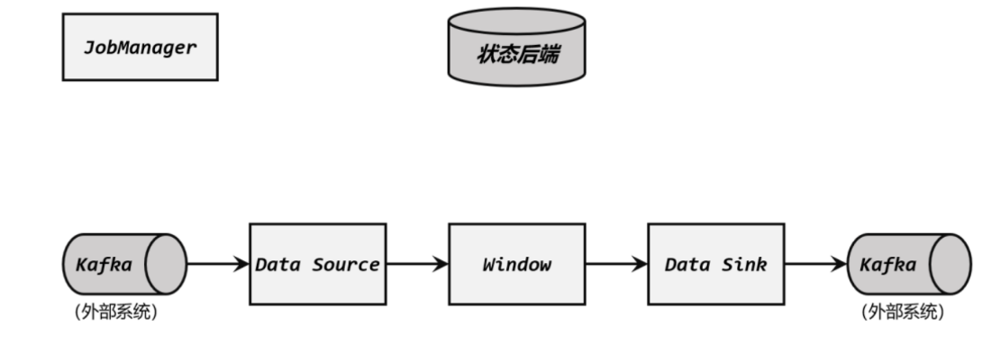
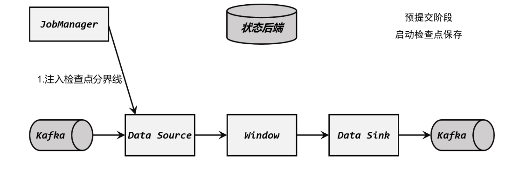
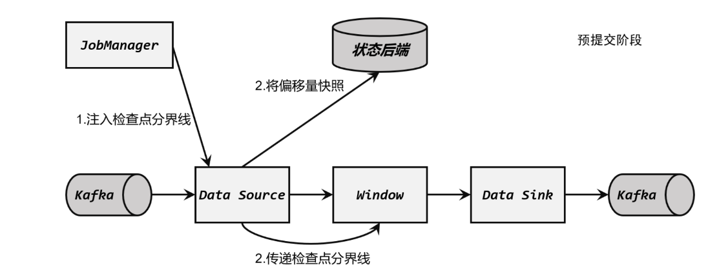
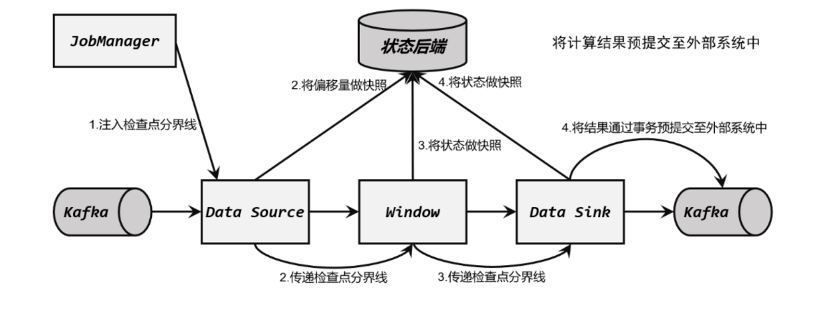
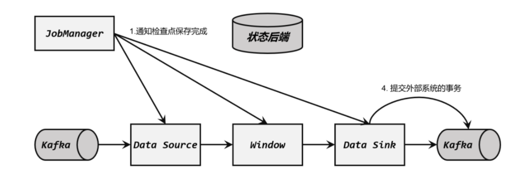

端到端精确一次
实际应用中，最难做到、也最希望做到的一致性语义，无疑就是端到端（end-to-end）的“精确一次”（exactly-once）。对于Flink内部来说，检查点机制可以保证故障恢复后数据不丢（在能够重放的前提下），并且只处理一次，所以已经可以做到exactly-once的一致性语义了。
需要注意的是，检查点能够保证故障恢复后数据只处理一次，并不是说之前统计过某个数据，现在就不能再次统计了；而是要看状态的改变和输出的结果，是否只包含了一次这个数据的处理。由于检查点保存的是之前所有任务处理完某个数据后的状态快照，所以重放的数据引起的状态改变一定不会包含在里面，最终结果中只处理了一次。
所以，端到端一致性的关键点，就在于输入的数据源端和输出的外部存储端。
输入端保证
入端主要指的就是Flink读取的外部数据源。对于一些数据源来说，并不提供数据的缓冲或是持久化保存，数据被消费之后就彻底不存在了。例如socket文本流就是这样，socket服务器是不负责存储数据的，发送一条数据之后，只能消费一次，是“一锤子买卖”。对于这样的数据源，故障后即使通过检查点恢复之前的状态，可保存检查点之后到发生故障期间的数据已经不能重发了，这就会导致数据丢失。所以就只能保证at-most-once的一致性语义，相当于没有保证。
想要在故障恢复后不丢数据，外部数据源就必须拥有重放数据的能力。常见的做法就是对数据进行持久化保存，并且可以重设数据的读取位置。一个最经典的应用就是Kafka。在Flink的Source任务中将数据读取的偏移量保存为状态，这样就可以在故障恢复时从检查点中读取出来，对数据源重置偏移量，重新获取数据。
数据源可重放数据，或者说可重置读取数据偏移量，加上Flink的Source算子将偏移量作为状态保存进检查点，就可以保证数据不丢。这是达到at-least-once一致性语义的基本要求，当然也是实现端到端exactly-once的基本要求。
输出端保证
有了Flink的检查点机制，以及可重放数据的外部数据源，我们已经能做到at-least-once了。但是想要实现exactly-once却有更大的困难：数据有可能重复写入外部系统。
因为检查点保存之后，继续到来的数据也会一一处理，任务的状态也会更新，最终通过Sink任务将计算结果输出到外部系统；只是状态改变还没有存到下一个检查点中。这时如果出现故障，这些数据都会重新来一遍，就计算了两次。对Flink内部状态来说，重复计算的动作是没有影响的，因为状态已经回滚，最终改变只会发生一次；但对于外部系统来说，已经写入的结果就是泼出去的水，已经无法收回了，再次执行写入就会把同一个数据写入两次。
所以这时，只保证了端到端的at-least-once语义。
为了实现端到端exactly-once，我们还需要对外部存储系统、以及Sink连接器有额外的要求。能够保证exactly-once一致性的写入方式有两种：
幂等写入事务写入
需要外部存储系统对这两种写入方式的支持，而Flink也为提供了一些Sink连接器接口。
幂等（idempotent）写入
所谓“幂等”操作，就是说一个操作可以重复执行很多次，但只导致一次结果更改。也就是说，后面再重复执行就不会对结果起作用了。
数学中一个典型的例子是，ex的求导下操作，无论做多少次，得到的都是自身。
而在数据处理领域，最典型的就是对HashMap的插入操作：如果是相同的键值对，后面的重复插入就都没什么作用了。
这相当于说，其实并没有真正解决数据重复计算、写入的问题；而是说，重复写入也没关系，结果不会改变。所以这种方式主要的限制在于外部存储系统必须支持这样的幂等写入：比如Redis中键值存储，或者关系型数据库（如MySQL）中满足查询条件的更新操作。
需要注意，对于幂等写入，遇到故障进行恢复时，有可能会出现短暂的不一致。因为保存点完成之后到发生故障之间的数据，其实已经写入了一遍，回滚的时候并不能消除它们。如果有一个外部应用读取写入的数据，可能会看到奇怪的现象：短时间内，结果会突然“跳回”到之前的某个值，然后“重播”一段之前的数据。不过当数据的重放逐渐超过发生故障的点的时候，最终的结果还是一致的。
事务（transactional）写入
如果说幂等写入对应用场景限制太多，那么事务写入可以说是更一般化的保证一致性的方式。
之前提到，输出端最大的问题就是“覆水难收”，写入到外部系统的数据难以撤回。自然想到，那怎样可以收回一条已写入的数据呢？利用事务就可以做到。
事务（transaction）是应用程序中一系列严密的操作，所有操作必须成功完成，否则在每个操作中所做的所有更改都会被撤消。事务有四个基本特性：**原子性(Atomicity)、一致性(Correspondence)、隔离性(Isolation)和持久性(Durability)，这就是著名的ACID。
在Flink流处理的结果写入外部系统时，如果能够构建一个事务，让写入操作可以随着检查点来提交和回滚，那么自然就可以解决重复写入的问题了。所以事务写入的基本思想就是：用一个事务来进行数据向外部系统的写入，这个事务是与检查点绑定在一起的。当Sink任务遇到barrier时，开始保存状态的同时就开启一个事务，接下来所有数据的写入都在这个事务中；待到当前检查点保存完毕时，将事务提交，所有写入的数据就真正可用了。如果中间过程出现故障，状态会回退到上一个检查点，而当前事务没有正常关闭（因为当前检查点没有保存完），所以也会回滚，写入到外部的数据就被撤销了。
具体来说，又有两种实现方式：预写日志（WAL）和两阶段提交（2PC）
预写日志（write-ahead-log，WAL）
事务提交是需要外部存储系统支持事务的，否则没有办法真正实现写入的回撤。那对于一般不支持事务的存储系统，能够实现事务写入呢？
预写日志（WAL）就是一种非常简单的方式。具体步骤是：
① 先把结果数据作为日志（log）状态保存起来
② 进行检查点保存时，也会将这些结果数据一并做持久化存储
③ 在收到检查点完成的通知时，将所有结果一次性写入外部系统。
这种方式类似于检查点完成时做一个批处理，一次性的写入会带来一些性能上的问题；而优点就是比较简单，由于数据提前在状态后端中做了缓存，所以无论什么外部存储系统，理论上都能用这种方式一批搞定。在Flink中DataStreamAPI提供了一个模板类GenericWriteAheadSink，用来实现这种事务型的写入方式。
需要注意的是，预写日志这种一批写入的方式，有可能会写入失败；所以在执行写入动作之后，必须等待发送成功的返回确认消息。在成功写入所有数据后，在内部再次确认相应的检查点，这才代表着检查点的真正完成。这里需要将确认信息也进行持久化保存，在故障恢复时，只有存在对应的确认信息，才能保证这批数据已经写入，可以恢复到对应的检查点位置。
但这种“再次确认”的方式，也会有一些缺陷。如果检查点已经成功保存、数据也成功地一批写入到了外部系统，但是最终保存确认信息时出现了故障，Flink最终还是会认为没有成功写入。于是发生故障时，不会使用这个检查点，而是需要回退到上一个；这样就会导致这批数据的重复写入。
两阶段提交（two-phase-commit，2PC）
前面提到的各种实现exactly-once的方式，多少都有点缺陷，有没有更好的方法呢？自然是有的，这就是传说中的两阶段提交（2PC）。
顾名思义，它的想法是分成两个阶段：先做“预提交”，等检查点完成之后再正式提交。这种提交方式是真正基于事务的，它需要外部系统提供事务支持。
具体的实现步骤为：
① 当第一条数据到来时，或者收到检查点的分界线时，Sink任务都会启动一个事务。
② 接下来接收到的所有数据，都通过这个事务写入外部系统；这时由于事务没有提交，所以数据尽管写入了外部系统，但是不可用，是“预提交”的状态。
③ 当Sink任务收到JobManager发来检查点完成的通知时，正式提交事务，写入的结果就真正可用了。
当中间发生故障时，当前未提交的事务就会回滚，于是所有写入外部系统的数据也就实现了撤回。这种两阶段提交（2PC）的方式充分利用了Flink现有的检查点机制：分界线的到来，就标志着开始一个新事务；而收到来自JobManager的checkpoint成功的消息，就是提交事务的指令。每个结果数据的写入，依然是流式的，不再有预写日志时批处理的性能问题；最终提交时，也只需要额外发送一个确认信息。所以2PC协议不仅真正意义上实现了exactly-once，而且通过搭载Flink的检查点机制来实现事务，只给系统增加了很少的开销。
Flink提供了TwoPhaseCommitSinkFunction接口，方便我们自定义实现两阶段提交的SinkFunction的实现，提供了真正端到端的exactly-once保证。
不过两阶段提交虽然精巧，却对外部系统有很高的要求。这里将2PC对外部系统的要求列举如下：
- 外部系统必须提供事务支持，或者 Sink 任务必须能够模拟外部系统上的事务。
- 在检查点的间隔期间里，必须能够开启一个事务并接受数据写入。
- 在收到检查点完成的通知之前，事务必须是“等待提交”的状态。在故障恢复的情况 下，这可能需要一些时间。如果这个时候外部系统关闭事务（例如超时了），那么未提交的数据就会丢失。
- Sink 任务必须能够在进程失败后恢复事务。
- 提交事务必须是幂等操作。也就是说，事务的重复提交应该是无效的。
可见，2PC在实际应用同样会受到比较大的限制。具体在项目中的选型，最终还应该是一致性级别和处理性能的权衡考量。
Flink和Kafka连接时的精确一次保证
在流处理的应用中，最佳的数据源当然就是可重置偏移量的消息队列了；它不仅可以提供数据重放的功能，而且天生就是以流的方式存储和处理数据的。所以作为大数据工具中消息队列的代表，Kafka可以说与Flink是天作之合，实际项目中也经常会看到以Kafka作为数据源和写入的外部系统的应用。在本小节，具体讨论一下Flink和Kafka连接时，怎样保证端到端的exactly-once状态一致性。
整体介绍
既然是端到端的exactly-once，可以从三个组件的角度来进行分析：
Flink内部
Flink 内部可以通过检查点机制保证状态和处理结果的exactly-once语义。输入端
输入数据源端的Kafka可以对数据进行持久化保存，并可以重置偏移量（offset）。所以可以在Source任务（FlinkKafkaConsumer）中将当前读取的偏移量保存为算子状态，写入到检查点中；当发生故障时，从检查点中读取恢复状态，并由连接器FlinkKafkaConsumer向Kafka重新提交偏移量，就可以重新消费数据、保证结果的一致性了。输出端
输出端保证exactly-once的最佳实现，当然就是两阶段提交（2PC）。作为与Flink天生一对的Kafka，自然需要用最强有力的一致性保证来证明自己。
Flink官方实现的Kafka连接器中，提供了写入到Kafka的FlinkKafkaProducer，它就实现了TwoPhaseCommitSinkFunction接口：
1 | public class FlinkKafkaProducer<IN> extends TwoPhaseCommitSinkFunction<IN, |
也就是说，写入Kafka的过程实际上是一个两段式的提交：处理完毕得到结果，写入Kafka时是基于事务的“预提交”；等到检查点保存完毕，才会提交事务进行“正式提交”。如果中间出现故障，事务进行回滚，预提交就会被放弃；恢复状态之后，也只能恢复所有已经确认提交的操作。
实现过程
为了方便说明，来考虑一个具体的流处理系统，由Flink从Kafka读取数据、并将处理结果写入Kafka，如下图所示。

这是一个Flink与Kafka构建的完整数据管道，Source任务从Kafka读取数据，经过一系列处理（比如窗口计算），然后由Sink任务将结果再写入Kafka。
Flink与Kafka连接的两阶段提交，离不开检查点的配合，这个过程需要JobManager协调各个TaskManager进行状态快照，而检查点具体存储位置则是由状态后端（StateBackend）来配置管理的。一般情况，会将检查点存储到分布式文件系统上。
实现端到端exactly-once的具体过程可以分解如下：

如图上图所示，JobManager通知各个TaskManager启动检查点保存，Source任务会将检查点分界线（barrier）注入数据流。这个barrier可以将数据流中的数据，分为进入当前检查点的集合和进入下一个检查点的集合。
算子任务对状态做快照
分界线（barrier）会在算子间传递下去。每个算子收到barrier时，会将当前的状态做个快照，保存到状态后端。

如上图所示，Source任务将barrier插入数据流后，也会将当前读取数据的偏移量作为状态写入检查点，存入状态后端；然后把barrier向下游传递，自己就可以继续读取数据了。
接下来barrier传递到了内部的Window算子，它同样会对自己的状态进行快照保存，写入远程的持久化存储。Sink 任务开启事务，进行预提交

如上图所示，分界线（barrier）终于传到了Sink任务，这时Sink任务会开启一个事务。接下来到来的所有数据，Sink任务都会通过这个事务来写入Kafka。这里barrier是检查点的分界线，也是事务的分界线。由于之前的检查点可能尚未完成，因此上一个事务也可能尚未提交；此时barrier的到来开启了新的事务，上一个事务尽管可能没有被提交，但也不再接收新的数据了。
对于Kafka而言，提交的数据会被标记为“未确认”（uncommitted）。这个过程就是所谓的“预提交”（pre-commit）。
检查点保存完成，提交事务
当所有算子的快照都完成，也就是这次的检查点保存最终完成时，JobManager会向所有任务发确认通知，告诉大家当前检查点已成功保存，如下图所示

当Sink任务收到确认通知后，就会正式提交之前的事务，把之前“未确认”的数据标为“已确认”，接下来就可以正常消费了。
在任务运行中的任何阶段失败，都会从上一次的状态恢复，所有没有正式提交的数据也会回滚。这样，Flink和Kafka连接构成的流处理系统，就实现了端到端的exactly-once状态一致性。
需要的配置
在具体应用中，实现真正的端到端exactly-once，还需要有一些额外的配置：
- 必须启用检查点；
在FlinkKafkaProducer的构造函数中传入参数Semantic.EXACTLY_ONCE；
配置Kafka读取数据的消费者的隔离级别
这里所说的Kafka，是写入的外部系统。预提交阶段数据已经写入，只是被标记为“未提交”（uncommitted），而Kafka中默认的隔离级别isolation.level是read_uncommitted，也就是可以读取未提交的数据。这样一来，外部应用就可以直接消费未提交的数据，对于事务性的保证就失效了。所以应该将隔离级别配置为read_committed，表示消费者遇到未提交的消息时，会停止从分区中消费数据，直到消息被标记为已提交才会再次恢复消费。当然，这样做的话，外部应用消费数据就会有显著的延迟。
事务超时配置
Flink的Kafka连接器中配置的事务超时时间transaction.timeout.ms默认是1小时，而Kafka集群配置的事务最大超时时间transaction.max.timeout.ms默认是15分钟。所以在检查点保存时间很长时，有可能出现Kafka已经认为事务超时了，丢弃了预提交的数据；而Sink任务认为还可以继续等待。如果接下来检查点保存成功，发生故障后回滚到这个检查点的状态，这部分数据就被真正丢掉了。所以这两个超时时间，前者应该小于等于后者。
总结
Flink作为一个大数据分布式流处理框架，必须要考虑系统的容错性，主要就是发生故障之后的恢复。Flink容错机制的核心就是检查点，它通过巧妙的分布式快照算法保证了故障恢复后的一致性，并且尽可能地降低对处理性能的影响。
本章详细介绍了Flink检查点的原理、算法和配置，并且结合一致性理论与Flink-Kafka的实际互连系统，阐述了如何用Flink实现流处理应用的端到端exactly-once状态一致性。这既是Flink底层原理的深入，也与之前的状态管理、水位线机制有联系和相通之处；相信通过本章，会对Flink乃至分布式系统的容错机制有更加深刻的理解。

...
...
This is copyright.